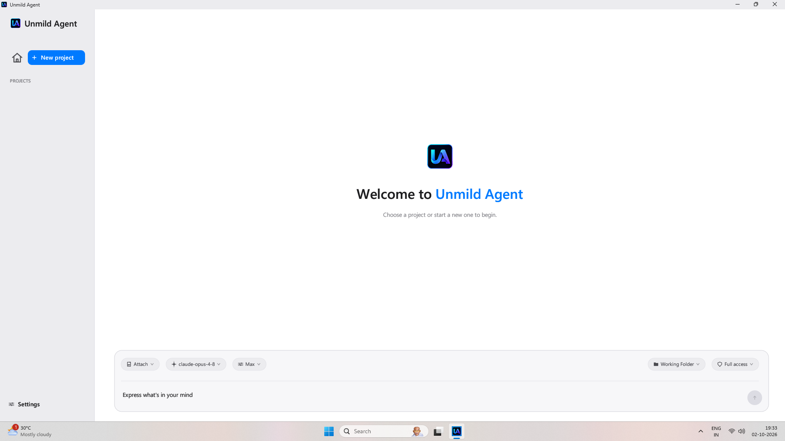
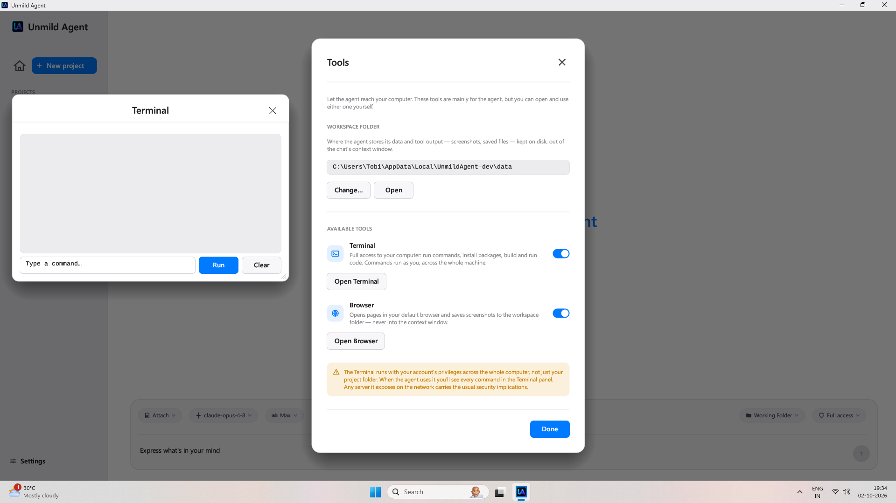

01 / Project context
Start where your work lives.
Create a project, choose a working folder, and describe what you want to do. The agent can read and edit files so the conversation stays connected to the code you are working on.
02 / Software development
Unmild Agent is an AI coding agent for Windows. Work with your project files, use your chosen model, and move from a task description to changes you can review.

A desktop workspace for using an AI agent with real files, terminal commands, and browser tools.
01 / Project context
Create a project, choose a working folder, and describe what you want to do. The agent can read and edit files so the conversation stays connected to the code you are working on.
02 / Model choice
Configure a supported provider with your own API key, then select a model and effort level. Model usage is billed by your provider, separately from the app.
03 / Tools
The workspace includes terminal and browser tools for tasks that need more than a text response. Follow the work in the app and review the resulting changes in your project.
04 / Control
Choose a permission mode to control when the agent asks before acting. Review the scope of access before running a task; terminal commands can run with your account’s privileges.

Unmild Agent is a Windows desktop AI coding agent from UNMILD. It can work with project files and use terminal and browser tools to carry out software development tasks.
Yes. Bring an API key for a supported provider. You choose the model, and your provider charges for model usage.
Visit the dedicated Unmild Agent website for setup and product details, or view Unmild Agent on Microsoft Store. The app is paid; check the Store for current pricing.
They are separate UNMILD products. Designer focuses on electronic hardware, while Agent focuses on software development tasks.
Continue exploring
For more information, visit the dedicated Unmild Agent website for features, setup details, and how to get the app.